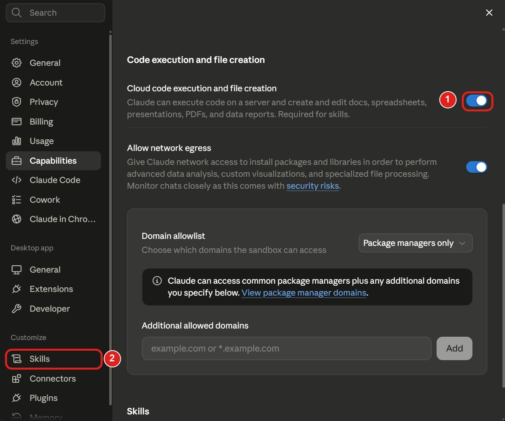
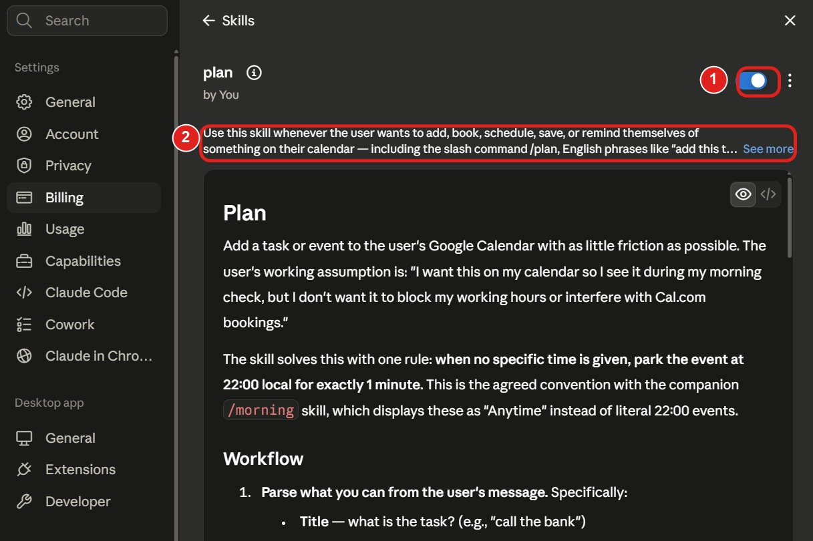
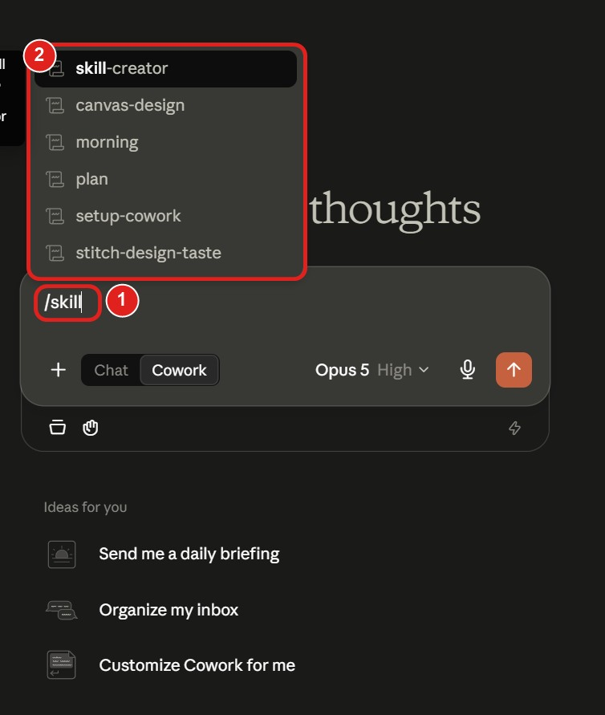
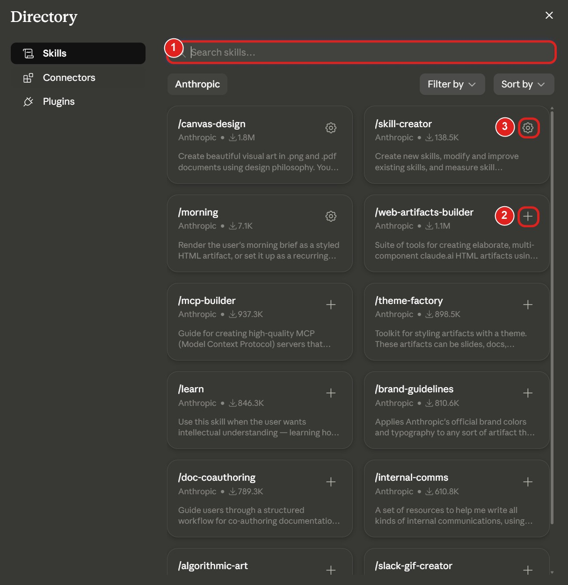

En skill är en SOP för AI. Du skriver ner hur något ska göras, en gång, och sen följer AI:n den instruktionen varje gång i stället för att gissa. Precis som i Matrix när Neo får kunskapen inlagd och plötsligt kan något han aldrig kunnat. Här är hela genomgången: vad de är, hur du bygger din egen utan att skriva en rad kod, var du hittar andras, och fällorna som får folk att ge upp.
ClaudeÖppen standardIngen kod krävs10 minuter
Vad en skill faktiskt är
Det låter tekniskt. Det är det inte.
En skill är en mapp med en fil som heter SKILL.md i. Det är hela grejen. Filen innehåller dina instruktioner, skrivna på vanlig svenska. Ingen kod krävs.
Anatomin · bara SKILL.md är obligatorisk
Anthropic beskriver det själva som en introduktionsguide för en ny kollega. Du skriver ner hur ni gör här: stegen, reglerna, vad som är viktigt. Sen kan den nya kollegan jobba som ni gör, utan att du förklarar om varje gång.
En hel skill, färdig att använda
---
name: morgon
description: Läser mina mejl och min kalender och ger en kort rapport på vad jag ska göra idag. Använd när jag skriver morgon, dagens plan, eller vad ska jag göra idag.
---
# Morgonrapport
1. Läs mejlen som kommit sedan igår kväll.
2. Hämta dagens möten ur kalendern.
3. Ge mig en kort rapport i den här ordningen:
- Dagens möten med tider
- Mejl som kräver svar idag
- Tre saker jag borde hinna med
Håll rapporten under en skärm. Inga långa förklaringar.
Två rader längst upp mellan streckmarkeringarna, sen dina instruktioner. Det är en komplett, fungerande skill.
Varför beskrivningen avgör allt
Den här delen förklarar nästan ingen, och det är den som avgör om din skill funkar.
AI:n läser inte hela din skill hela tiden. Den laddar den i tre nivåer, och bara den första är alltid påslagen.
Tre nivåer · nivå 1 avgör om nivå 2 ens öppnas
Där ligger hela poängen. AI:n ser bara namnet och beskrivningen tills den bestämmer sig för att öppna skillen. Är beskrivningen luddig öppnas den aldrig, hur bra instruktionerna än är.
Samma skill · skillnaden ligger i beskrivningen
Reglerna för beskrivningen: skriv i tredje person, ta med vad den gör och när den ska användas, och räkna med max 200 tecken om du ska ladda upp den i Claude-appen. Skriv gärna in orden du faktiskt brukar använda, som i exemplet ovan.
Två sätt att komma igång
Gör din egen, eller ta någon annans. Båda är värda att kunna.
Skapa din egen
Du kan något som du gör om och om igen. Skriv ner det en gång, spara tiden för alltid.
Din kunskap
Använd andras
Vill du bygga en snygg hemsida men kan inte design? Ta en skill från någon som kan, ge den till din AI.
Andras kunskap
HUVUDVÄGEN
Låt Claude bygga skillen åt dig
Det här är den enklaste vägen och den jag rekommenderar. Ingen mapp, ingen terminal, ingen zip-fil. Du pratar fram skillen i en vanlig chatt. Anthropic har en egen guide för exakt det här, riktad till folk som inte är tekniker.
1
Slå på funktionen först
Gå till Settings, sedan Capabilities, och slå på Code execution and file creation. Utan den syns inte Skills över huvud taget.
Settings→Capabilities→Code execution and file creation

Steg 1 · slå på reglaget (1), sen hittar du Skills i menyn (2)
Det här är inte samma meny som Skills. Settings är där du slår på funktionen, Customize är där skillsen sedan bor. Två olika ställen, och det är därför många inte hittar. Skills funkar på gratiskontot, du behöver ingen betald plan för det här.
2
Beskriv vad du vill ha
Öppna en ny chatt och berätta vad skillen ska göra. Bifoga gärna mallar eller exempel i samma meddelande, det gör skillen mycket bättre.
Skriv i Claude
Bygg en skill som läser mina mejl och min kalender och ger mig en kort rapport på vad jag ska göra idag.
3
Svara på frågorna
Claude ställer följdfrågor: vad ska den göra, när ska den användas, hur ska resultatet se ut. Svara utförligt. Tumregeln är att någon som inte kan din process ska kunna följa den.
Sen skriver Claude en färdig skill åt dig och ger tillbaka filen.
4
Slå på den
Skillen är inte aktiv förrän du lagt in den. Gå till Customize, sedan Skills, och lägg till den där. Så här ser en färdig skill ut när den ligger inne: reglaget (1) slår på och av den, och beskrivningen (2) är den AI:n läser.

En egen skill inne i appen · reglage (1) och beskrivning (2)
Customize→Skills
5
Testa och be om ändringar
Be om en uppgift som skillen ska klara. Funkar det ser du att Claude nämner skillen medan den jobbar. Gör den fel, säg det bara rakt ut i chatten så ändrar Claude i skillen.
Vill du kalla på den direkt i stället för att vänta på att Claude väljer själv: skriv snedstreck i skrivfältet (1) så listas alla dina skills (2), och välj den du vill ha.

Skriv snedstreck (1) så listas dina skills (2)
Förvänta dig inte att den blir perfekt på första försöket. Den riktiga vinsten kommer när du kört den några gånger och justerat. En skill blir bättre varje gång du rättar den.
ANDRAS KUNSKAP
Hitta skills som andra byggt
Det finns en färdig katalog inbyggd i Claude. Du behöver ingen GitHub-länk och ingen nedladdning.
Customize→Skills→Browse skills→Install

Katalogen · sök (1), plus för att installera (2), kugghjul betyder redan installerad (3)
Sök fram det du vill ha (1) och tryck på plus (2) för att installera. Har en skill ett kugghjul i stället (3) betyder det att du redan har den. Notera att skill-creator ligger här, så verktyget som bygger skills installerar du på exakt samma sätt som allt annat.
Titta utan konto
Vill du bläddra i lugn och ro först finns katalogen på webben: claude.com/plugins. Ingen inloggning krävs.
Installerade är låsta
Skills du installerar från katalogen är view-only. Du kan använda dem men inte ändra i dem. Vill du ändra en: ladda ner en kopia, ändra den, och ladda upp den som din egen.
Fick du en zip-fil?
Delar någon en färdig skill med dig laddar du upp den på samma Skills-sida. Zip-strukturen måste vara exakt rätt, se nedan.
Zip-regeln · den vanligaste orsaken till misslyckad uppladdning
Mappens namn måste dessutom vara samma som skillens namn i filen. Heter skillen morgon ska mappen heta morgon. Stämmer det inte nekas uppladdningen.
FÖR DIG SOM KÖR TERMINALEN
Claude Code
Kör du Claude Code finns inga menyer och ingen uppladdning. Skills är bara mappar på din dator, och det är enklare än det låter.
Enklaste sättet
En enda fil, ingen mapp: lägg .claude/commands/morgon.md i projektet. Den blir /morgon direkt.
Personlig skill
C:\Users\dittnamn\.claude\skills\morgon\SKILL.md gäller i alla dina projekt. På Mac: ~/.claude/skills/morgon/SKILL.md.
Projekt-skill
.claude/skills/morgon/SKILL.md i projektmappen. Följer med i git, så hela teamet får den.
Vad den heter
Mappens namn blir kommandot. Mappen morgon körs med /morgon.
Vill du ha hjälp att skriva den finns Anthropics eget verktyg, skill-creator. Kör du i appen installerar du det från katalogen som vilken skill som helst. I terminalen är det inte förinstallerat, där installerar du det en gång:
Är det bara en skill-mapp lägger du den i .claude\skills\ som ovan. Du kan också bläddra bland färdiga skills med /plugin och fliken Discover. Den officiella marknadsplatsen finns redan där från start.
KVALITET
Så skriver du en skill som faktiskt är bra
Reglerna nedan kommer från Anthropics egen dokumentation om hur man skriver skills. De är enkla, och de flesta bryter mot dem.
Svara på fyra frågor först
Vad ska skillen kunna? När ska den användas? Hur ska resultatet se ut? Behöver den testas? Har du svaren skriver sig skillen nästan själv.
Skriv som order
"Läs mejlen", inte "du skulle kunna läsa mejlen". Rakt och konkret. Vaga formuleringar ger vaga resultat.
Håll den kort
Under 500 rader. Blir den längre, dela upp den och lägg det som sällan behövs i mappen references/.
Var snål med utrymmet
Allt du skriver tar plats i AI:ns minne. Ta med det som behövs, inget mer.
Utgå från riktig kunskap
Skriv ner hur du gör, inte vad AI:n redan gissar sig till. Det är din erfarenhet som gör skillen värd något.
Detaljnivå efter risk
Känslig uppgift där fel blir dyrt: var mycket specifik. Kreativ uppgift: lämna utrymme.
Bra att veta: AI:n hoppar över skills för uppgifter den klarar ändå. Ber du om något enkelt startar skillen inte, även om beskrivningen passar perfekt. Det är inte trasigt, det är meningen. Skills är till för det som är krångligt eller görs i flera steg.
FÄLLOR
Det som får folk att ge upp
Nästan alla problem är ett av de här sex. Ingen av dem är ditt fel, de är bara oförklarade.
Skills syns inte alls
Code execution är avslaget. Slå på det under Settings, Capabilities.
Uppladdningen misslyckas
Zip-filen har filerna löst i stället för mappen, eller mappnamnet matchar inte skillens namn.
Namnet nekas
Bara små bokstäver, siffror och bindestreck. Inga mellanslag, inga versaler, inga understreck. Orden claude och anthropic är förbjudna.
Beskrivningen för lång
Claude-appen tar max 200 tecken. En skill skriven för Claude Code kan alltså nekas när du laddar upp den.
Skillen startar aldrig
Beskrivningen är för vag, eller så saknar den orden du faktiskt använder när du ber om saken.
Den finns inte på andra ställen
Skills synkar inte. Claude-appen, Claude Code och ChatGPT är tre separata ställen. Samma mapp, men du lägger in den på varje yta för sig.
OCH CHATGPT
Samma format funkar där också
Skills är en öppen standard. Anthropic skrev formatet och släppte det fritt, och OpenAI har anslutit sig. Samma SKILL.md, samma två rader längst upp. En skill du byggt för Claude kan alltså återanvändas.
Var det ligger
I sidopanelen: Plugins, sedan fliken Skills. Du kan bygga en i chatten eller ladda upp en färdig.
Så kallar du på den
Med @ följt av namnet, i stället för snedstreck.
Läs det här först
Skills i ChatGPT ligger under ChatGPT Work och finns inte på Free eller Go. OpenAI listar Business, Enterprise, Healthcare och Edu. Har du ett vanligt privatkonto ser du troligen ingen Skills-flik.
Därför bygger jag guiden på Claude: det funkar på fler konton. Kan du redan Claude-vägen kan du ChatGPT-vägen, det är samma fil.
INNAN DU INSTALLERAR ANDRAS
En snabb säkerhetskoll
En skill är inte bara text. Den kan innehålla skript som körs på din dator. Anthropics egna ord: behandla det som att installera ett program.
Öppna och läs
SKILL.md är vanlig text. Öppna den och läs vad den säger åt AI:n att göra.
Kolla avsändaren
Anthropics egen katalog är granskad. En slumpmässig länk från en främling är det inte.
Titta efter skript
Ligger det .py, .sh eller .js-filer i mappen kan de köras på din dator.
Det här är inte skrämsel, bara samma försiktighet som när du laddar ner ett program. Skills från kända avsändare är oftast helt oproblematiska. Men läs filen först, den är gjord för att gå att läsa.
Vill du lära dig AI, eller veta om ditt företag kan använda det?
Jag hjälper dig komma igång, från första frågan till färdig rutin. Hör av dig så tar vi reda på om och var AI passar för dig eller ditt företag.